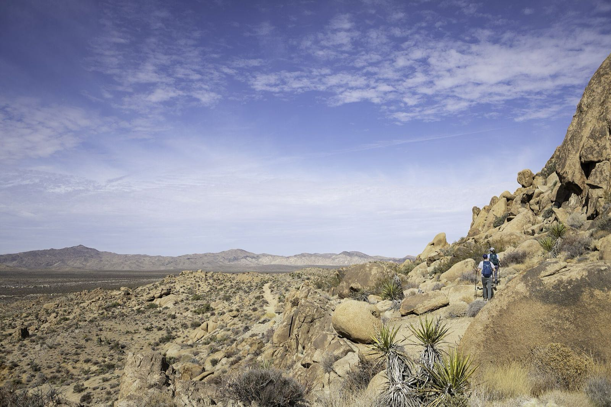
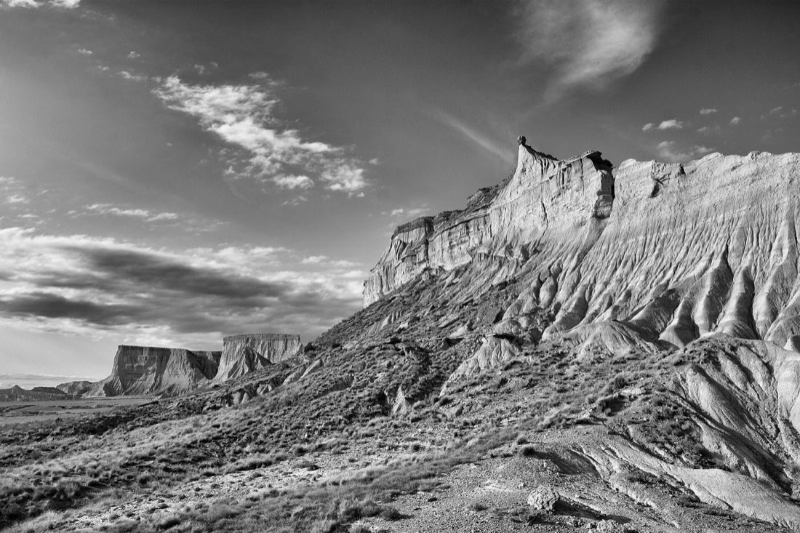
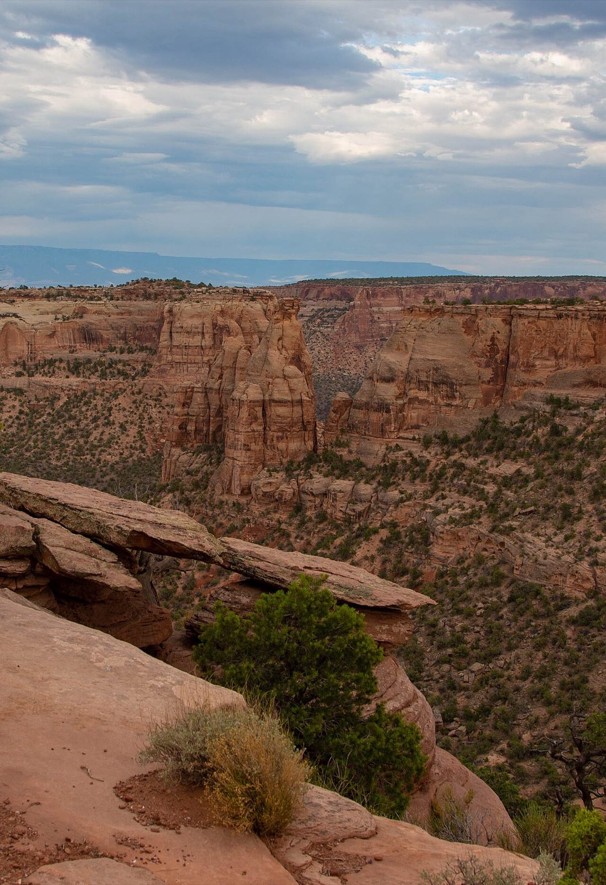
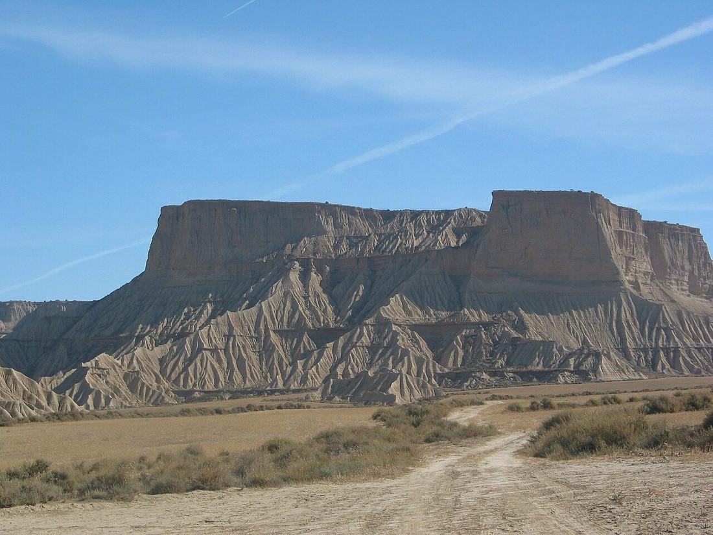
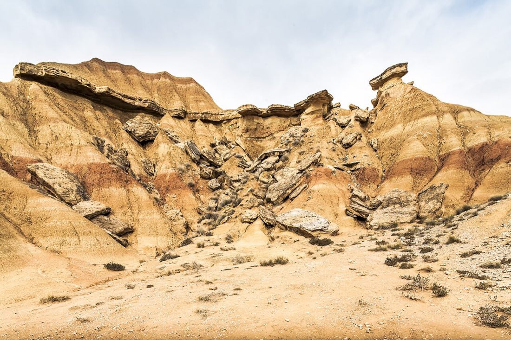

Au bord du vide
Noir et blanc, grain épais. Marie, de profil, les orteils au-dessus du canyon, la mâchoire qui tremble. Des cailloux tombent au ralenti. Une musique sourde monte du ravin. Coupe au noir.

Il y a quelques mois, une question nous est tombée dessus et ne nous a plus lâchés : et si la personne qu'on aime n'était plus vraiment là ?
Elle est devenue un couple, un désert, un labyrinthe de roche… et Les Barreaux de Sable. Ce traitement raconte le film, mais surtout ce qu'on y met : pourquoi chaque scène, chaque lumière, chaque silence.
On vous emmène dans les Bardenas. Prenez de l'eau.

Et si la personne qu'on aime n'était plus vraiment là ?
Au cœur d'un désert écrasant de chaleur, une randonnée vire au cauchemar lorsqu'un jeune couple se perd dans un labyrinthe de crevasses.
À leur sortie, ils pensent s'être retrouvés, ignorant que la réalité s'est fissurée : chacun marche désormais aux côtés du double de l'autre. Prisonniers d'un jeu de miroirs où les tensions explosent, jusqu'où iront-ils avant de comprendre que l'être qu'ils aiment n'est plus là ?

Un couple qui ne se dispute jamais n'est pas un couple heureux.
C'est un couple qui se tait.

L'idée est simple : un couple qui ne se dispute jamais n'est pas un couple heureux, c'est un couple qui se tait. Thomas et Marie sourient, se frôlent les doigts, s'appellent « Indiana Jones ». Tout va bien. En apparence.
Ce ne sont pas deux personnes qui se déchirent, ce sont deux personnes qui se bridaient. Chacun voit très bien les défauts de l'autre, et chacun se tait pour protéger le couple, et son ego. Leur règle implicite : aucune embrouille, donc aucune vraie communication. Une relation toxique sans cris ni violence, qui empêche chacun d'exister.
Le désert leur enlève tout : le réseau, les repères, les échappatoires. Il ne reste qu'eux, et tout ce qu'ils ne se sont jamais dit. Chaque non-dit fait monter la pression, comme dans une cocotte-minute.
C'est le cœur de notre film. Chaque plan, chaque raccord, chaque silence sert la même idée : ce qu'on étouffe finit toujours par sortir, et le jour où ça sort, il est trop tard.
Le film commence par sa fin. Marie est au bord du vide, en noir et blanc, terrifiée. Puis on revient au matin, en couleurs, chez un couple parfait.
Le spectateur sait donc où l'histoire va. Ce qu'il ignore, c'est pourquoi. Quand le plan d'ouverture revient, on élargit le cadre et la vérité apparaît : Marie n'était pas seule.
 Ouverture = fin
Ouverture = fin Un coude de rocher
Un coude de rocherTout bascule dans un coude de rocher. Quelques secondes hors champ suffisent, et quand ils ressortent, chacun marche à côté du double de l'autre.
On ne souligne rien. Même visage, mêmes vêtements, même cadre. C'est un regard un peu trop fixe, un sourire qui dure un peu trop, une phrase un peu trop sèche. Le spectateur doute en même temps que les personnages, et c'est ce doute qui rend le film inconfortable.
À partir de là, le film avance en deux lignes parallèles qui se répondent plan pour plan : mêmes cadrages, mêmes rythmes, rôles inversés.
Samoht et Eiram ne sont pas des monstres. Ce sont Thomas et Marie sans filtre, et leurs prénoms le disent : la même personne, à l'envers. Leur violence ne vient pas de ce qu'ils inventent, mais de ce qu'ils révèlent. Tout ce qu'ils disent était déjà là.
Un berger et deux moutons parfaitement synchronisés, tête basse, traversent le désert. On ne l'explique pas : c'est un avertissement muet.
Le fantastique reste toujours au bord du réel, et les deux lectures, surnaturelle et métaphorique, doivent tenir jusqu'au bout.
Arrêter de se taire.
Commencer à se perdre.
 L'œil
L'œilMarie marche sur un œil immense, creusé dans le sable. Elle ne le voit pas ; nous, si.
C'est Thomas : son regard qui la suit partout, son contrôle déguisé en protection. Il gère ses fréquentations, sa famille, ses journées, et il le fait si calmement que personne ne le soupçonne. Même ici, au milieu de nulle part, elle marche sous son regard.
En pleine dispute, le nez de Thomas se met à saigner, d'un coup, sans raison. Il essuie, sourit, ne dit rien.
Ce sang, c'est celui de Marie : ses colères, son tempérament sanguin, qui ont besoin de lui pour exister. Elle explose, c'est lui qui saigne. Dans le noir et blanc final, ce sera la seule tache de couleur.

Le langage visuel du film est brut, solaire et de plus en plus oppressant. Il part d'un désert immense et contemplatif et se referme peu à peu sur les visages, jusqu'à l'étouffement.
Tout le film est tourné en pellicule. Le grain est marqué, le contraste fort, les noirs profonds et les hautes lumières qui brûlent. La palette est chaude d'un bout à l'autre : ocres, terres et blancs aveuglants. Le désert doit se sentir sur la peau.
On ouvre sur Marie, de profil, au bord du vide, dans un noir et blanc au grain épais. Puis le titre claque et la couleur arrive, à son maximum : les Bardenas écrasées de soleil et l'air qui vibre au-dessus de la terre craquelée.
Dans la première partie, les plans sont larges, fixes et contemplatifs. Le décor domine le cadre et le couple n'est qu'une silhouette dans l'immensité minérale. Cette grandeur amplifie leur vulnérabilité : ils sont minuscules, seuls, sans repère.

Le moment clé est le faux raccord. À la sortie des crevasses, les deux duos réapparaissent dans des cadres rigoureusement identiques. Rien ne trahit l'échange, sauf un regard qui ne cille plus ou des gestes un peu mécaniques.
À partir de là, deux mouvements se font en même temps. Les couleurs se désaturent progressivement, au rythme de la dispute, et la caméra se rapproche. Les plans larges cèdent la place aux plans moyens, puis aux visages couverts de sueur et de poussière. Le décor sort du cadre, le monde se réduit au couple et il n'y a plus d'issue.
Le berger et ses moutons surgissent comme un mirage dans une image déjà presque délavée, puis se dissolvent dans la réverbération.
Au climax, la couleur a disparu. On est au plus près : un souffle, des yeux, une main qui se pose entre deux omoplates. On retrouve le plan d'ouverture, et cette fois on comprend ce qu'il cachait.
L'épilogue rouvre enfin le cadre. Le dernier plan est très large, comme au début : la voiture s'éloigne dans le désert et la poussière retombe lentement. Le décor est le même, mais le couple n'existe plus.
Pellicule, chaleur et désaturation progressive : un film qui s'éteint et se resserre en même temps que le couple, jusqu'à ce qu'il ne reste plus rien entre eux.
La lumière du film est naturelle, brute et impitoyable. Elle suit la course du soleil sur une seule journée, et cette course devient celle du couple : de la douceur du matin à la violence du zénith, puis au froid du soir.
Au début de la randonnée, le soleil est encore bas. La lumière est chaude et rasante, avec de longues ombres sur la terre craquelée et des peaux dorées. Tout est doux et accueillant. C'est la lumière d'un couple qui va bien, ou qui fait semblant.
Dans les crevasses, le soleil direct disparaît. Il ne reste qu'une lumière indirecte, renvoyée par les parois ocre, plus fraîche et plus sourde. Seul le ruban de ciel brûle tout en haut du cadre. La trouée blanche au bout du couloir aveugle presque et ressemble à un passage.
À la sortie, tout se durcit. Plus le soleil monte, plus la lumière devient verticale et écrasante. Au zénith, elle efface les ombres et les reliefs, brûle les hautes lumières et creuse les orbites. La sueur accroche la lumière sur les fronts, les regards se plissent et la chaleur devient palpable, hostile. On ne protège plus les visages, on les expose.
Pour l'apparition du berger, la lumière se met à trembler. La réverbération est telle que l'image semble se dissoudre. Au sommet de la falaise, en noir et blanc, le contraste est maximal : des noirs profonds, un ciel brûlé et des silhouettes découpées au-dessus du vide.
Puis le soleil tombe. Sur le parking, la lumière est bleutée et froide, sans contraste, comme si la journée s'était vidée de toute sa chaleur, en même temps que le couple. Sur tout le film, on travaille au plus près de la lumière naturelle, avec peu de sources et beaucoup de réflecteurs et de négatif pour sculpter les visages sans trahir le réel.
 Lumière 1 — Le matin
Lumière 1 — Le matin Lumière 2 — Les crevasses
Lumière 2 — Les crevasses Lumière 3 — Le zénith
Lumière 3 — Le zénith Lumière 4 — Le berger
Lumière 4 — Le berger
Lumière 5 — La falaise Lumière 6 — Le parking
Lumière 6 — Le parking
Une journée, une boucle. Le film commence par sa fin, puis remonte le temps jusqu'à elle.
Noir et blanc, grain épais. Marie, de profil, les orteils au-dessus du canyon, la mâchoire qui tremble. Des cailloux tombent au ralenti. Une musique sourde monte du ravin. Coupe au noir.
Le titre claque, la couleur explose. Thomas et Marie s'enfoncent dans les Bardenas, complices. Plus de réseau : « Zéro barre. On est officiellement rayés de la carte. »
Les parois montent à douze mètres, le ciel n'est plus qu'un ruban. Au détour d'un coude, le passage se divise. Deux secondes de bourdonnement : la réalité vient de se fissurer.

Chacun ressort de son côté et retrouve l'autre. Même visage, mais un regard qui ne cille plus, un sourire trop long. Ce sont Samoht et Eiram.
Les premières piques, dites calmement. Samoht corrige Marie, Eiram se moque du planning de Thomas. On croit à la fatigue.
Les vérités tombent, de plus en plus lourdes : l'isolement, la surprotection, le père, la tromperie. Les vrais craquent : ils savaient.
Au zénith, les doubles tournent le dos. Marie rappelle Samoht comme si tout pouvait se réparer ; Thomas crie derrière Eiram, plus en colère qu'il ne l'a jamais été.

Dans la réverbération, un berger et deux moutons au même pas, tête basse. Il frappe le sol de son bâton. Toc. Tout disparaît.
Chacun court après le double de l'autre, vers la falaise. « Faut que je te dise un truc… » Personne n'entendra jamais ces phrases.

Noir et blanc. Deux promontoires face à face, séparés par le canyon. Ils se voient, ils crient. Le vent avale les mots.

Le plan d'ouverture revient. Le cadre s'élargit : le double est là, juste derrière. Une main à plat entre les omoplates. Coupe au noir.
Fin de journée, lumière froide. Samoht et Eiram remontent en voiture sans se regarder. Les portières claquent. La poussière retombe.

Ils aimaient le personnage, pas la personne.
C'est la thèse du film. Au climax, chacun dit enfin ce dont il avait besoin : lui, quelqu'un à sauver ; elle, quelqu'un qui la retienne. Aucun des deux ne parle de l'autre, seulement du rôle.
La dispute monte en cinq paliers. Les doubles ne cherchent pas la dispute : ils disent ce qu'ils pensent. Ce sont les vrais qui craquent.
Samoht corrige Marie sans élever la voix. Thomas demande à Eiram si elle a pris son cachet.
L'isolement et la surprotection, dits en face.
Le père, l'enterrement manqué, la tromperie. Les vrais craquent : ils savaient.
On ne voit plus que Samoht et Eiram. Leurs vérités se répondent d'un monde à l'autre.
Chacun s'en va. Personne n'entendra les derniers mots.
| Scène | Tension | On ressent | Couleur |
|---|---|---|---|
| 1# Au bord du vide | 9/10 | Vertige | Noir & blanc |
| 2# Rayés de la carte | 2/10 | Insouciance | Chaud |
| 3# Le labyrinthe | 4/10 | Enfermement | Chaud |
| 4# Le faux raccord | 5.2/10 | Malaise | Chaud |
| 5# Les frottements | 5.6/10 | Agacement | Se retire |
| 6# L'escalade | 7.4/10 | Étouffement | Se retire |
| 7# La rupture | 6.8/10 | Abandon | Se retire |
| 8# L'apparition | 6/10 | Irréel | Se retire |
| 9# La traque | 8.2/10 | Panique | Se retire |
| 10# La séparation | 8.8/10 | Impuissance | Noir & blanc |
| 11# Le piège du miroir | 10/10 | Vertige | Noir & blanc |
| 12# Le parking | 1.5/10 | Vide | Froid |
On ne cherche pas deux acteurs. On cherche quatre personnages dans deux corps.
Thomas et Marie, c'est le couple de façade : complice, attentionné, souriant. Samoht et Eiram, c'est ce même couple quand il arrête de se taire. Nos comédiens doivent donc jouer le masque et ce qu'il y a dessous, souvent dans le même plan, parfois avec un seul regard. La douceur qui sonne juste d'un côté, la froideur qui glace de l'autre, avec le même visage.
On cherche des comédiens capables de jouer peu et dire beaucoup. Un sourire un peu trop long, une épaule un peu trop droite : le basculement doit se lire dans des détails, sans tomber dans le « méchant » appuyé.
Thomas doit avoir un look atypique. Un visage qu'on n'oublie pas, une gueule plutôt qu'une belle gueule. Il doit faire un peu tache dans l'image du couple parfait : c'est cette fissure qui rend crédible Samoht, qui contrôle et manipule pour ne jamais être dépassé. Marie, elle, doit être d'une beauté évidente. C'est elle qui porte l'image du couple idéal, celui qu'on envie. Plus son visage est lumineux, plus le sourire figé d'Eiram dérange.
Avant tout, on cherche un duo. Ce qui compte, c'est l'alchimie entre eux : on fera passer les essais en couple, parce qu'un couple qui se tait se joue à deux. Enfin, le désert ne pardonne rien : chaleur, poussière, course, escalade. Il nous faut des comédiens endurants, prêts à finir la journée couverts de sueur et de sable.
Thomas a une tête qu'on ne range dans aucune case. Il n'est pas beau au sens magazine, mais il a une vraie présence. C'est le mec drôle de la bande, toujours une vanne d'avance, surtout sur lui-même : comme ça, les autres n'ont pas besoin de la faire à sa place.
Il prévoit tout : itinéraire, carte papier, gourde pleine. Il dit que c'est par sécurité. En vrai, il déteste perdre le contrôle. Avec Marie, tout va bien, il le répète souvent. Peut-être un peu trop.
Samoht, c'est Thomas sans les blagues. Même visage, mais le regard ne sourit plus. Tout ce que Thomas pense en silence, Samoht le dit à voix haute, calmement.
Ce qu'il cachela jalousie, le complexe d'infériorité, le besoin de contrôle
Alors, qui est le vrai Thomas : celui qui fait rire, ou celui qui n'a jamais osé parler ?
Marie a une beauté évidente et des bracelets qui tintent quand elle parle. Elle a confiance en son jugement : elle sait ce qui est bon pour les autres, et surtout pour Thomas.
C'est celle qu'on appelle quand ça ne va pas, et elle adore ça. Sa plus grande peur, c'est de ne plus être indispensable. Elle voit très bien les petites piques de Thomas, mais elle ne dit rien : une dispute, ça fissure.
Eiram, c'est Marie sans le sourire poli. Son sourire s'étire un peu trop, et ses yeux ne clignent plus. Elle ne protège plus Thomas, elle le juge. Elle frappe là où ça fait mal, parce qu'elle sait exactement où c'est.
Ce qu'elle cachela peur d'être abandonnée, les crises, le chantage affectif, la tromperie
Et si la femme parfaite n'avait jamais été qu'un rôle ?

Notre désert doit être réel, brûlant et écrasant. Le spectateur doit sentir la chaleur, la poussière et le vertige. Pas besoin de l'imaginer : il existe à deux heures de la France.
On tourne dans le désert des Bardenas Reales, en Navarre. Classé parc naturel et réserve de biosphère par l'UNESCO, il s'étend sur près de 42 000 hectares, avec des paysages qui évoquent l'Ouest américain sans traverser l'Atlantique.
C'est aussi un décor de cinéma reconnu, lieu de tournage de séries comme Game of Thrones. Pour un western psychologique, on ne pouvait pas rêver mieux.

Il isole le couple, coupe le réseau et retire tous les repères. Plus nos personnages s'enfoncent dedans, plus le paysage se déforme avec eux.
Le désert n'est pas un décor. C'est le troisième personnage.
La plaine.Une étendue ocre, craquelée, à perte de vue. C'est là que tout commence, dans la complicité de façade, et là que tout se brise. La lumière de midi écrase les reliefs et efface les ombres : personne ne peut se cacher.
La crevasse.Des failles étroites aux parois immenses, où le ciel ne forme plus qu'un ruban. Un espace confiné, plein d'écho, presque claustrophobe : le lieu de la bascule, où la réalité se fissure.
Deux promontoires face à face, séparés par le canyon. Assez proches pour se voir, mais trop loin pour s'entendre. C'est l'image finale du couple.
Même désert, deux mondes. Comme nos deux duos évoluent en miroir, chaque lieu doit pouvoir se dédoubler : même type de décor, même axe de caméra, deux endroits différents. La variété des Bardenas nous le permet sans tricher.
Les contraintes. La chaleur, le vent et la lumière ne se contrôlent pas, donc on les intègre. On tourne tôt le matin et en fin de journée pour ménager l'équipe, et on garde le zénith pour les scènes où la lumière doit être cruelle. Sur place, on s'appuiera sur la Navarra Film Commission et ses prestataires locaux : guides, repérages, hébergement des équipes et restauration sur le tournage.
Le silence est notre matière première.
On ouvre sur presque rien : une respiration, le vide sous les pieds de Marie. Puis le désert prend toute la place : un vent chaud, une chaleur qui vibre, une immensité qui avale les voix. Dans les crevasses, le monde se referme. Chaque souffle résonne, l'écho rapproche ce qui est loin et éloigne ce qui est proche. Au faux raccord, un bourdonnement sourd, deux secondes, puis plus rien : la réalité vient de se fissurer, et c'est l'oreille qui le sent avant l'œil.
Plus la dispute monte, plus le son se rapproche des corps : les pas, la soif, les souffles courts, le cœur dans les tempes. L'étrange, lui, reste en dessous, comme une réverbération qui ne devrait pas être là. Au bord du canyon, le vent avale les mots : on voit les lèvres bouger, on n'entend rien. Et dans la dernière scène, le vent est tombé. Il ne reste que le silence de la voiture, le son le plus dur du film.
Le montage est d'abord ample. Des plans longs et fixes qui laissent le désert respirer et le couple se perdre dans le cadre. À partir du faux raccord, le film avance en deux lignes parallèles qui se répondent plan pour plan : d'un côté Marie et Samoht, de l'autre Thomas et Eiram. Mêmes cadrages, mêmes rythmes, rôles inversés.
Puis tout se resserre et s'accélère : les allers-retours entre les deux duos deviennent de plus en plus rapides, jusqu'aux cuts brutaux. Au climax, on ne voit plus que Samoht et Eiram, et leurs répliques s'enchaînent comme une seule dispute, d'un monde à l'autre. L'épilogue rouvre tout d'un coup : un plan très large, très long, où la poussière retombe.
La musique n'existe qu'au bord du vide. Une SynthWave sombre, lourde, analogique, qui monte du ravin. D'abord une nappe grave, puis des dizaines de voix qui hurlent à l'unisson, étouffées comme derrière un mur : pour nous, ce sont toutes les phrases que le couple ne s'est jamais dites. Enfin une pulsation, comme un cœur qui s'emballe.
Elle arrive deux fois, au tout début et au moment de la poussée, construite à l'identique, et les deux fois la même coupe au noir l'arrête net. La première fois, le spectateur ne comprend pas ce qu'il entend. La deuxième, il reconnaît : la boucle se referme par l'oreille.
| Scène | On entend | Plan moyen | Montage |
|---|---|---|---|
| 1# Au bord du vide | une respiration, le vide, puis une musique sourde qui monte du ravin | 9 s | le couple |
| 2# Rayés de la carte | le vent chaud, les rires, l'immensité qui avale tout | 7 s | le couple |
| 3# Le labyrinthe | l'écho des parois : chaque souffle résonne | 6 s | le couple |
| 4# Le faux raccord | un bourdonnement sourd, puis plus rien | 5 s | 2 allers-retours |
| 5# Les frottements | les pas, la soif, des silences qui pèsent | 4.5 s | 3 allers-retours |
| 6# L'escalade | les voix qui montent, le cœur dans les tempes | 3.5 s | 4 allers-retours |
| 7# La rupture | le zénith qui bourdonne, la plaine vide | 3 s | 4 allers-retours |
| 8# L'apparition | l'air qui tremble, un tintement lointain | 4 s | 3 allers-retours |
| 9# La traque | la course, les souffles courts, le sol qui ondule | 2.2 s | 6 allers-retours |
| 10# La séparation | le vent qui avale les mots | 1.6 s | 8 allers-retours |
| 11# Le piège du miroir | la musique revient, puis le noir | 1.2 s | 12 allers-retours |
| 12# Le parking | plus un souffle de vent, le silence de la voiture | 12 s | les doubles |